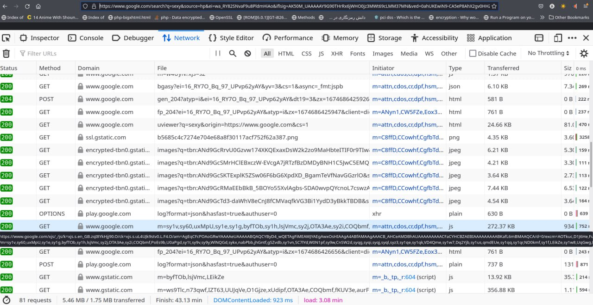

از چه سرچ انجینی استفاده کنیم؟
حتماً شنیدین که افراد حوزه حریم شخصی بارها ابراز کردن که اگر از گوگل و امثالهم استفاده میکنید مهاجرت کنید به داکداکگو و امثالهم ، اما این گزاره چقدر میتونه در حریم شخصی و امنیت تأثیر گذار باشه؟
توی این مقاله کوشولو میخوایم به این موضوع بپردازیم.
الان سالها از اولین باری که من داکداکگو رو امتحان کردم میگذره، اولش یه تم سفید معمولی داشت ، و خیلی پاسخ های کوئریهاش مبتدیانه بود...
توی علم IR و RS به این قضیه میگن:
- Cold Start
نکته1:
آی آر یا بازنمایی اطلاعات مخفف Information Retrieval هست و آر اس مخفف Recommender systems هست،اینا سرفصلهایی علمی هست که به این موارد میپردازه که زیر باک سرچ انجینها چخبره...
خلاصه داکداکگو اومد و خیلی ساده بود:
duckduckgo.com
به درد من نمیخورد...
بعدش چند سالی گذشت و دوستان عرزشی فیلترش کردن ، و این اواخر با مسموم کردن DNS سرور ها رکوئستهاشو بایپس کردن روی سیف-سرچ و رفع فیلترش کردن...
الان این روزها نتیجه های کوئریش خیلی خوب تر شده و از کلداستارت خارج شده...✅
داکداکگو ادعا میکنه که امنه ، اما این ادعا چقدر درسته؟
برای یکی مثل ما که علمش رو داریم قابل سنجشه✅
من یه کوئری توی گوگل میزنم و باهم بررسی میکنیم که گوگل چه اطلاعاتی از من رو توی هدرهای HTTP انکپسوله میکنه و میفرسته به سمت سرورهای خودش، بعداً همین کوئری رو توی ddg تکرار میکنیم و تست میکنیم که اونجا چه اتفاقایی میافته.
توی گوگل:

چیزی که ما میبینیم یه سرچ ساده هست...، ولی بررسی بیشتر پیچیدهش میکنه:
1- اطلاعاتی که توی هدر URL به هیبت GET انکپسوله شده:
متشکله از:
https://www.google.com/search?q=sexy&source=hp&ei=wa_RY82SNvaF9u8PldmHiAo&iflsig=AK50M_UAAAAAY9G90THrRx6jWHO0jz3MWt69cLMM37MN&ved=0ahUKEwiN9-CA5eP8AhX2gv0HHZXsAaEQ4dUDCAc&uact=5&oq=sexy&gs_lcp=Cgdnd3Mtd2l6EAMyBQgAEIAEMgUIABCABDIFCAAQgAQyBQgAEIAEMgUILhCABDIFCC4QgAQyBQguEIAEMgUIABCABDIFCAAQgAQyBQgAEIAEOgsILhCABBDHARDRAzoICC4QgAQQ1AJQAFjuC2DTlwFoAXAAeACAAcACiAHdCJIBBTItMi4ymAEAoAEB&sclient=gws-wiz
1- پارامتر کوئری :
q=sexy
2- پارامتر سورس:
source=hp
جایی هست که کوئری رو نوشتید، اینجا ایچ پی مخفف home page هست... داره به سرورش میگه که این بشر سایتمونو باز کرده توش سرچ کرده... یه راست از مرورگر یا پلاگین یا .... نیومده.
3- پارامتر ei :
ei=wa_RY82SNvaF9u8PldmHiAo
حالا کم کم داره پارامتر های مشکوک نمایان میشه :)) این ie تایم استمپ دقیـــــــــــــــــــــــــــق زمانی هست که شما سرچ کردی... در هیبت انکد شده! حتی طبق افسانه ها توش میلیثانیه هم نوشته شده!
من دیکدش میکنم، و لینک مقاله دیکد کردن + سورسکدش رو آخر میفرستم:
var_dump(
time(),
ei_decode("wa_RY82SNvaF9u8PldmHiAo")
);int(1674687414)array(4) {
[0]=>
int(1670492097)
[1]=>
int(887117)
[2]=>
int(4261249782)
[3]=>
int(2701257877)
}همونطور که میبینید در قیاس با تایم استمپ فعلی کاملا منطقیه...
و اما پارامتر های دیگه چیستن؟! میلیثانیه؟ تاخیر؟ سرعت تایپ انگشتان من؟! به راستی چی هستن؟؟؟ از گوگل بپرسید نه از من... بخواید که یه داکیومنت کلریفای شده از همه اینها بده بیرون...
4- پارمتر iflsig
iflsig=AK50M_UAAAAAY9G90THrRx6jWHO0jz3MWt69cLMM37MN
این چیست؟
راستش من حوصله تحلیل تمام حرکات گوگل خبیث رو ندارم...و هرچی هم جلوتر میریم داره وضعیت خطریتر میشه، ولی خب از یکی شنیدم که این پارامتر iflsig یه نوع تریک به مکانیزم csrf هست که ریدایرکت نوتیس رو برطرف کنه....، توکنیه که بعد از چند دقیقه اکسپایر میشه... اما جزئیات بیشتر ، از گوگل بخواین :)
نکته 2 : من CSRF و فامیلاشونو یه جایی قبلا توضیح دادم، پیداش میکنم و مقالهش میکنم میذارم اینجا...
5- پارامتر ved
ved=0ahUKEwiN9-CA5eP8AhX2gv0HHZXsAaEQ4dUDCAc
این یکی از وحشتناک ترین پارامترها هست درباره اینه که لینک چجوری کلیک شده... خودش 5 تا ساب-پارامتر داره:
ساب-پارامتر اول میگه که لینک کجای صفحه بوده،
ساب-پارامتر دوم میگه نوع لینک چی بوده،
ساب-پارامتر سوم ... میگه نتیجه سرچ کجا صفحه...
من دیگه توضیح نمیدم... خودتون بخونید... از این صفحه خبیث که آیپی ایرانو بسته:
https://moz.com/blog/inside-googles-ved-parameter
6- پارامتر uact
uact=5
7- پارامتر oq
oq=sexy
8- پارامتر gs_lcp
gs_lcp=Cgdnd3Mtd2l6EAMyBQgAEIAEMgUIABCABDIFCAAQgAQyBQgAEIAEMgUILhCABDIFCC4QgAQyBQguEIAEMgUIABCABDIFCAAQgAQyBQgAEIAEOgsILhCABBDHARDRAzoICC4QgAQQ1AJQAFjuC2DTlwFoAXAAeACAAcACiAHdCJIBBTItMi4ymAEAoAEB
9- پارامتر sclient
sclient=gws-wiz
راجه به این چهارتای آخر.....من فقط oq رو میدونم که Original Query بوده... یعنی اون چیزی که اول سرچ کردی... (بعدا ممکنه تغییرش بدی)
بقیهش رو من نمیدونم...
در افسانه ها اومده که اطلاعات مهمی درش نهفته هست و به نحو خبیثانهای انکپسوله شده و رفته... ولی گوگل ازشون حرفی نمیزنه...
دوستان تمااااااااااااااااااااام این حرفا فقط هدر URL بود !!! فقط پارامترهای زیر متد GET بود...
و ما به عنوان یه دوستار HTTP و طرفدار استاد برنرزلی، میدونیم که GET محدودیت بایت داره توی ارسال داده.... فقط 8 کیلوبایت مجازه یعنی 8192 بایت ، یعنی 8192 کرکتر...
پس گوگل خبیث اطلاعات اصلیش رو اینجا جا نمیشه که بفرسته...
و اما اونارو کجا میفرسته؟!
هدر پست (POST)؟
بریم ببینیم توی این یه سرچ چیا انکپسوله شده بوده توی پستهای HTTP :

بطور کلی تا اونجایی که من میبینم 81 تا درخواست گت/پست رفته و برگشته -
طبیعیه که چندین تا درخواست داشته باشیم... چون HTTP استیتلس هست... ولی 81 طبیعیه؟!
و اما توی اون پستها چی انکپسوله شده؟!
من نمیتونم همش رو بررسی کنم... مثلا ببینین که دومیش اینه:
POST
https://www.google.com/gen_204?atyp=i&ei=wa_RY82SNvaF9u8PldmHiAo&ct=slh&v=t1&im=M&pv=0.9109014057876286&me=12:1674686414028,V,0,0,0,0:1029,h,1,1,o:2121,h,1,1,i:532,h,1,1,o:12,h,1,1,i:475,h,1,1,o:3,h,1,1,i:9,h,1,1,o:3,h,1,1,i:102,h,1,1,o:7,h,1,1,i:396,V,0,0,1920,456:126,R,1,1,0,0,1908,456:0,G,1,1,1000,188:26,V,0,0,1920,456,1:0,R,1,1,0,0,1908,456:1077,B,659:3402,e,H&zx=1674686423348
اینا چه معنی میدن؟
از گوگل بپرسین.
اما اینجا قسمت مهم ماجراست، شما اگر توی گوگل روی یه لینک کلیک کنید، مستقیم ریدایرکت نمیشید به اون لینک، بلکه اول میرین به سمت سرور گوگل، اونجا یسری از اطلاعات ثبت میشه توی دیتابیس گوگل راجع به اینکه کی و کجا و با چه سشنی روی کدوم لینک کلیک کردین، و بعدش استاد شمارو ریدایکرت میکنه به مقصد.
یعنی اگر من بخوام روی یکی از نتیجه ها کلیک کنم ، هایپر لینکی که من رو ریدایرکت میده ، مستقیما نمیره سمت داکیومنت مدنظر... بلکه اول میره سمت سرور گوگل ، بهش میگه که این طرف که اونو سرچ کرده بود ، اینقدر زمان رو فکر کرد و اسکرول کرد و با این سرعت روی فلان نتیجه کلیک کرد:))
چطوری؟ اینطوری:
https://www.google.com/url?sa=t&rct=j&q=&esrc=s&source=web&cd=&cad=rja&uact=8&ved=2ahUKEwjzhvCK5eP8AhWv_rsIHT6PDWkQFnoECBgQAQ&url=https%3A%2F%2Fwww.merriam-webster.com%2Fdictionary%2Fsexy&usg=AOvVaw036M2DCas1W3nQB6UEeT4n
این دیگه تحلیلش به عهده خودتون-
حالا میخوام همین سرچ رو با داکداکگو تکرار کنم...
25 تا رکوئست رفت و برگشت... میشه 1/3 رکوئستهای گوگل:

هدر URLش رو ببینید!
https://duckduckgo.com/?q=sexy&t=h_&ia=definition
1- پارامتر کوئری
q=sexy
2- پارامتر t
t=h_
احتمالا سورس رو نشون میده -> هومپیج
3- پارامتر
ia=definition
که چون دفنیشن کلمه کوئری رو آورده اومده... فک کنم اگه دفینیشن نداشته باشیم میشه:
ia=web
همین 3 تا تمام چیزایی هست که انکپلسوله کرده...
البته توی پستهاش اطلاعات بیشتری هست… ولی شما خودتون تحلیل بفرمائین.
مساله بعدی مهم این که برخلاف گوگل یا دیگر خبیثان، هایپرلینکا مستقیم میرن به نتیجه...
لاگ نمیندازن یه جا:)
تا همینجا میتونیم بفهمیم که چقدر ادعای داکداکگو صحت داره✅
من به عنوان کسی که قبلا یه سرچ انجین نوشتم و یکمی با کارکردش آشنایی دارم، میدونم که حل کردن مساله کلداستارت چقدر سخته ، و از طرفی اگر شما به عمد نخواید که اطلاعات رو جمع آوری کنید ، کیفیت سیستم و خدماتتون میاد پایین...
چون شناختی از کاربر ندارین.
گوگل اینقدر خدماتش خوبه ، چون شمارو از خودتون هم بهتر میشناسه...
شرکت تجاریه و انتظاریم ازش نداریم ، اما اگر دنبال امنیت و حریم شخصی و ناشناسی هستین (که شاید بعدا بگیم که چرا مهمه) بهتره که اول از تعویض سرچ انجینتون شروع کنید...
الان داکداکگو مکانیزم های خیلی جالبی رو پیش گرفته... مثلا اینکه خودش یه سری سرچ انجین دیگه رو پراکسی میکنه ، و خودشو میذاره وسط ، از این طرف هویت شمارو جلوی اونا فاش نمیکنه...
با این حرکات میتونه تا حد خیلی خوبی کمبودش رو نسبت به گوگل بهبود ببخشه...
ولی احتمالا نمیتونه خیــــلی بهبود ببخشه ، چون اون موقع شما حق دارید که شک کنید چجوری شده که اینقدر خوب شده اگر مسیر دیگر خبیثان رو نرفته:))
اگه علاقهمند به زیر باک داکداکگو هستین:
کد :
https://deedpolloffice.com/blog/articles/decoding-ei-parameter
function ei_decode($ei)
{
// Copyright 2013 Deed Poll Office Ltd, UK <https://deedpolloffice.com>
// Licensed under Apache Licence v2.0 <http://apache.org/licenses/LICENSE-2.0>
$ei = base64_decode(str_replace(array('_', '-'), array('+', '/'), $ei));
if (!preg_match('/^
(.{4})
((?:[\x80-\xff]*[\0-\x7f])+)
$/sx', $ei, $matches)) return false; // Non-valid ei value
$ret = array();
$val = 0;
foreach (str_split($matches[1]) as $i => $c)
$val = PHP_INT_SIZE < 5 && function_exists('bcadd') ?
bcadd($val, bcmul(ord($c), bcpow(2, $i * 8))) :
$val + (ord($c) << $i * 8);
$ret[0] = $val;
preg_match_all('/[\x80-\xff]*[\0-\x7f]/', $matches[2], $matches, PREG_SET_ORDER);
foreach ($matches as $j => $match) {
$val = 0;
foreach (str_split($match[0]) as $i => $c)
$val = PHP_INT_SIZE < 8 && function_exists('bcadd') ?
bcadd($val, bcmul(ord($c) & 0x7f, bcpow(2, $i * 7))) :
$val + ((ord($c) & 0x7f) << $i * 7);
$ret[$j + 1] = $val;
}
return $ret;
}کپی رایت
این یک مقاله آزاد و متنباز تحت مجوز GFDL1-3 میباشد، بنابراین اجازه کپی، توزیع و/یا تغییر این سند با شرایط مجوز GNU Free Documentation License داده شده است.
نویسنده
- بهراد.ب (behroora@yahoo.com)
منابع
- https://github.com/duckduckgo
- https://help.duckduckgo.com/privacy/t/
- https://help.duckduckgo.com/duckduckgo-help-pages/settings/params/
- http://stackoverflow.com/questions/2659952/ddg#2659995
- https://stackoverflow.com/questions/69660435/what-are-the-components-of-a-google-com-url-string
- https://stackoverflow.com/questions/70866734/what-does-the-ved-parameter-in-a-google-search-refer-to
- https://cs50.stackexchange.com/questions/38839/cs50w-project-0-im-feeling-lucky
- https://deedpolloffice.com/blog/articles/decoding-ei-parameter
- https://stackoverflow.com/questions/18584386/what-does-ei-mean-in-the-google-homepage-url-https-www-google-co-in-gws-rd#20753179
مسائل مرتبط با این مقاله
این مقاله بصورت آزاد و اپنسورس در مخزن کتابها/مقالات آزاد در لینک زیر در دسترس است:
https://github.com/TadavomnisT/Free_Books-Documents/tree/main/Articles/2-which-search-engine-Pr
نسخه انگلیسی این مقاله:
https://github.com/TadavomnisT/Free_Books-Documents/tree/main/Articles/2-which-search-engine-E
هر نوع اشکال علمی، مساله یا بحث مربوط با این مقاله را میتوانید از طریق Issue در ریپازیتوری یا ایمیل مطرح نمایید:
- https://github.com/TadavomnisT/Free_Books-Documents/issues
- behroora@yahoo.com